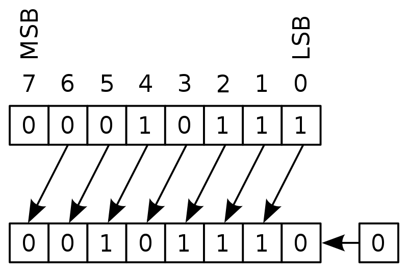

Tras la introducción que hemos realizado, ahora queremos que seas tú quien comienza a programar. Para empezar, comenta con tu clase las cuestiones propuestas a continuación y descubrid cómo los lenguajes de programación no están muy alejados de vuestro conocimiento actual.
Presta atención la lectura introductoria que se te propone a continuación. Pretende situarte en la historia del software y que comprendas el arduo esfuerzo y trabajo que nos ha llevado hasta el lenguaje con el que hoy vas a desarrollar tus conocimientos de programación y con los que serás capaz de llevar a cabo nuestro proyecto que culmina este recurso.
Piensa en cómo resuelves alguna necesidad cotidiana y explica a tu grupo el algoritmo (serie de pasos) con el que la realizas.
¿Crees que poner una serie de valores personalizados en un dispositivo electrónico, como se utiliza habitualmente, es “programar”? ¿Qué otra palabra utilizaríais para referir estas acciones?
Haced una lista de los lenguajes de programación que habéis utilizado en cursos anteriores.
2. Software y programación
Ya sabrás que el software es una serie de instrucciones y variedad de datos que nos permite trabajar con los recursos que un equipo informático, y que sin él los ordenadores o dispositivos móviles no serían más que un conglomerado de miles de componentes electrónicos.
El cambio que ha producido el software en el mundo actual se debe al uso que le pueden dar las personas: no solo es utilizar las novedosas aplicaciones de moda, sino facilitar tareas cotidianas y hacerlas más rápidas y eficientes, aumentar las ganancias, distribuir mejor el tiempo, en definitiva hacer la vida personal y laboral más fácil y cómoda.
Por eso se ha vuelto tan importante y ha tenido un desarrollo tan rápido.

Al principio, los programadores tenían que escribir sus programas en lenguaje ensamblador. Esto implicaba una tarea difícil, ya que la optimización del espacio en memoria de un programa dependía de la habilidad y el ingenio del programador, que tenía que aplicar trucos tales como desplazar un byte a la izquierda para obtener un número multiplicado por dos en vez de implementar la multiplicación matemática que podía llevar cientos de espacios de memoria, los cuales estaban muy limitados.
Estos códigos estaban realizados con palabras básicas del inglés (ADD, GOTO,...) y todas las instrucciones iban una debajo de otra en línea, dando lugar a códigos tremendamente largos.
Con este método, resolver grandes problemas y desarrollar aplicaciones avanzadas se convertía en misión imposible. Y fueron precisamente estos problemas los que impulsaron las investigaciones software que dieron lugar a identificar y desarrollar los 3 puntos claves en el desarrollo software, y con él el desarrollo de los SSOO. Estas claves fueron: la estructuración de los problemas en algoritmos, la creación de tipos de datos y operadores y los lenguajes de programación de alto nivel.
En este apartado de tu recurso de aprendizaje, vamos a recordar y conocer nuevos aspectos de estos tres elementos básicos de la programación.
Conjunto de los componentes lógicos necesarios que hace posible la realización de tareas específicas, en contraposición a los componentes físicos que son llamados hardware.
Es un lenguaje de programación de bajo nivel. Consiste en un conjunto de mnemónicos que representan instrucciones básicas para los computadores, microprocesadores, microcontroladores y otros circuitos integrados programables.
Es un conjunto de instrucciones o reglas definidas y no-ambiguas, ordenadas y finitas que permite, típicamente, solucionar un problema, realizar un cómputo, procesar datos y llevar a cabo otras tareas o actividades.
Es un atributo de los datos que indica al ordenador (y/o al programador/programadora) sobre la clase de datos que se va a manejar. Esto incluye imponer restricciones en los datos, como qué valores pueden tomar y qué operaciones se pueden realizar.
Un lenguaje de programación de alto nivel se caracteriza por expresar los algoritmos de una manera adecuada a la capacidad cognitiva humana, en lugar de la capacidad con que los ejecutan las máquinas.
Lectura facilitada
Los SSOO supusieron el comienzo del desarrollo software.
El software es una serie de instrucciones y variedad de datos que nos permite trabajar con los recursos que un equipo informático.
El cambio que ha producido el software en el mundo actual se debe al uso que le pueden dar las personas. Hacen la vida personal y laboral más fácil y cómoda.
Por eso se ha vuelto tan importante y ha tenido un desarrollo tan rápido.
Al principio, las programadoras y programadores tenían que escribir sus programas en lenguaje ensamblador. Esto implicaba una tarea difícil, ya que la optimización del espacio en memoria de un programa dependía de la habilidad y el ingenio del programador.
Estos códigos estaban realizados con palabras básicas del inglés (ADD, GOTO,...) y todas las instrucciones iban una debajo de otra en línea, dando lugar a códigos tremendamente largos.
Hay 3 puntos claves en el desarrollo software: la estructuración de los problemas en algoritmos, la creación de tipos de datos y operadores y los lenguajes de programación de alto nivel.
En este apartado de tu recurso de aprendizaje, vamos a recordar y conocer nuevos aspectos de estos tres elementos básicos de la programación.
3. ¿Cómo debes afrontar este apartado?
Para un correcto aprendizaje del lenguaje de programación que te proponemos aquí te recomendamos:
No intentes aprender a programar leyendo o viendo los vídeos solamente: intenta realizar por tu cuenta todo los ejemplos.
Sigue las instrucciones paso a paso y ten abierto en tu ordenador la interfaz de código a la vez que avanzas en el aprendizaje del lenguaje.
Ten en cuenta que el ordenador es un dispositivo "tonto": sólo sabe interpretar los comandos exactos que le estás enviando. Esto implica que si confundes una letra, una mayúscula, etc. puede que tu programa no funcione. ¡No te frustres! Repasa punto por punto y, si aún así no te funciona coméntalo: 4, 8, ... ojos ven más que un par.
Y por supuesto si en algún momento no entiendes algo o no te unciona como es debido, ¡pide siempre ayuda!
 Tras la introducción que hemos realizado, ahora queremos que seas tú quien comienza a programar. Para empezar, comenta con tu clase las cuestiones propuestas a continuación y descubrid cómo los lenguajes de programación no están muy alejados de vuestro conocimiento actual.
Tras la introducción que hemos realizado, ahora queremos que seas tú quien comienza a programar. Para empezar, comenta con tu clase las cuestiones propuestas a continuación y descubrid cómo los lenguajes de programación no están muy alejados de vuestro conocimiento actual.